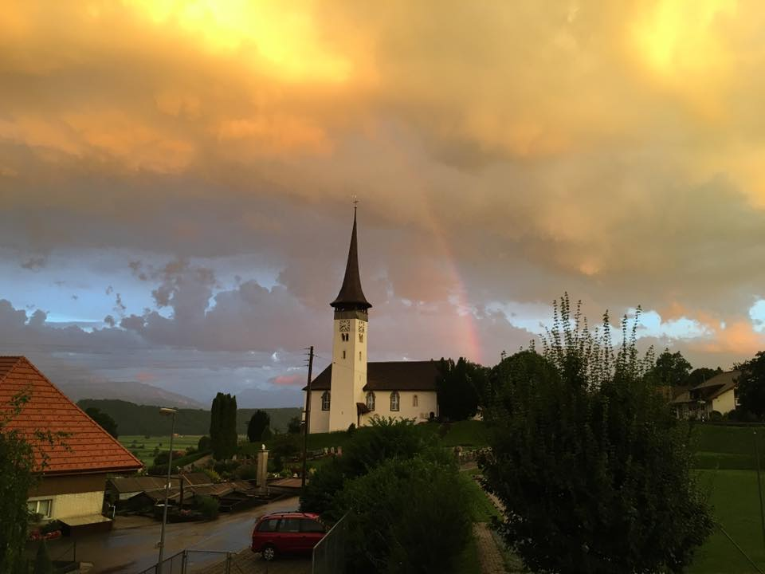

Tobias & Anne | Segnung und Feier
Nach unserer Hochzeit in Seattle am 17. September werden wir am Ende unserer Hochzeitsreise am 14. Oktober in der Schweiz unsere neue Ehe mit einer Segnung feiern.
Die Segnung beginnt um 16:00 Uhr in der Kirche Kirchenthurnen.

Anschliessend werden wir uns im Kirchgemeindehaus Stettlen zu einem gemeinsamen Abendessen treffen.